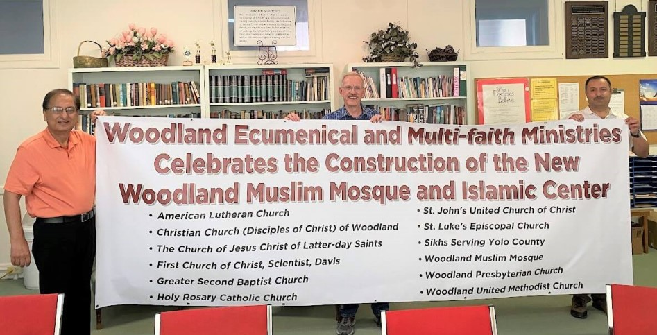

Welcome to WEMM!
The Woodland Ecumenical and Multi-faith Ministries (WEMM) council is a group of faith communities in Woodland who meet together each month to:
• Do Good by bringing our members and the community together to serve, and by supporting local charities helping those in need, and
• Promote interfaith worship, friendship, understanding, and respect.
Each participating faith community may have up to 3 voting members of WEMM. We meet once a month, rotating locations between the various member faith communities.
All of Woodland’s faith communities are invited to be members of WEMM, including those outside of Woodland but serving Woodland residents. For more information, or to join one of our meetings to check it out, contact WEMM’s secretary, Viola Fong, 530-379-3553.
Purpose, Mission, and Vision
- The purpose of WEMM shall be to call together diverse faith communities to foster unity, service, and fellowship.
- The mission of WEMM shall be to
- Celebrate and cultivate the diverse faiths and cultures within the community
- Develop and support interfaith and ecumenical worship and learning opportunities
- Serve the poor, oppressed and the needy for the sake of building bridges of hope between faith
communities and persons in need
- Advocate for the full humanity and inherent value of all persons
- Model and encourage the responsible stewardship of the planet and her resources.
- The Vision of WEMM is to be and become the Beloved Community.

- The purpose of WEMM shall be to call together diverse faith communities to foster unity, service, and fellowship.
- The mission of WEMM shall be to
- Celebrate and cultivate the diverse faiths and cultures within the community
- Develop and support interfaith and ecumenical worship and learning opportunities
- Serve the poor, oppressed and the needy for the sake of building bridges of hope between faith communities and persons in need
- Advocate for the full humanity and inherent value of all persons
- Model and encourage the responsible stewardship of the planet and her resources.
- The Vision of WEMM is to be and become the Beloved Community.